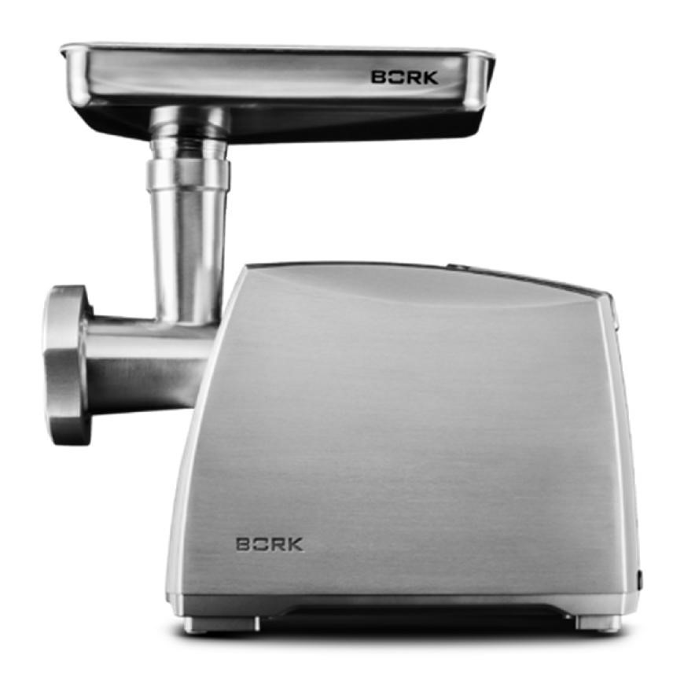
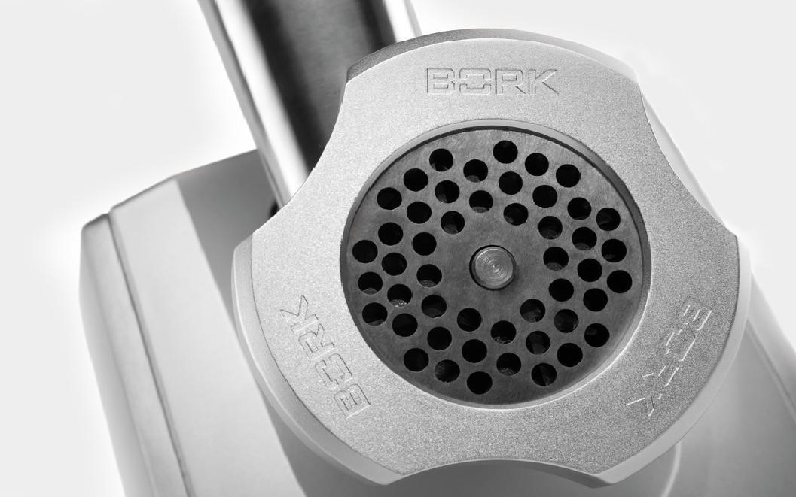
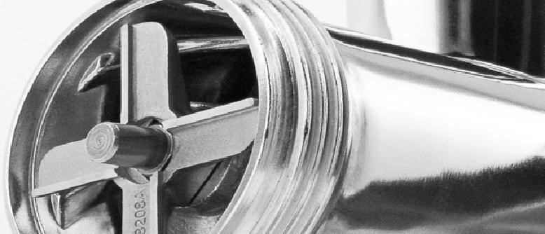
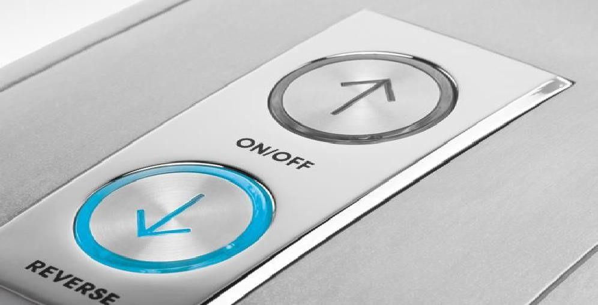
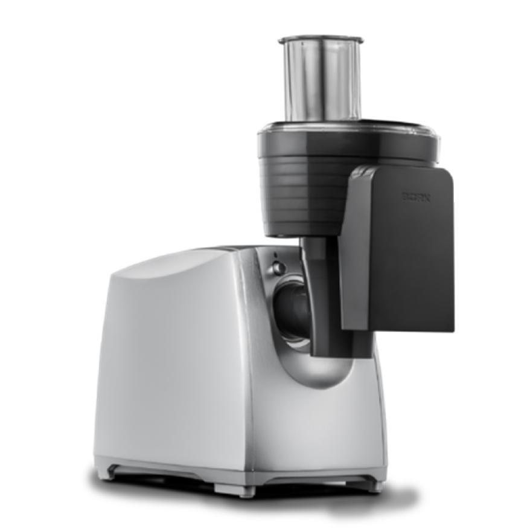

Мясорубка BORK M501
Технические особенности
- Электронная стабилизация оборотов
- Сверхпрочный нож из легированной стали
- 2 скорости работы: для мяса и шинковки, для приготовления колбас
- Усовершенствованная система реверса. Мясорубка замедляет скорость вращения, и только после этого переключается в режим реверс
- Электронная система отключения. Если температура двигателя достигнет 80°С, раздастся звуковой сигнал, и мясорубка автоматически выключится
- Длина электрического кабеля: 1 м
- Страна производитель: Китай
Высокая мощность
Двигатель мощностью 2000 Вт и две скорости работы позволяют получать качественный фарш из любого типа мяса.
Сверхпрочный нож из легированной стали
Нож из легированной стали и три решетки для фарша позволяют готовить самые разнообразные блюда от рубленого бифштекса до паштета. Набор для нарезки кубиками терка и шинковка незаменимы при приготовлении закусок и салатов.
Легирующие элементы - это металлы, которые вводят, как примеси для получения определенных свойств. Cr, Ni, Mn, Si, Mo, W, V, Ti, Zr, Nb, Co, Al, Cu. Таким образом можно изменять пластичность или устойчивость к ржавению, изменить температуру плавления и т.п.
Система автоматического отключения двигателя при перегреве и система реверса
Если температура двигателя достигнет 80 °С, мясорубка автоматически выключится. После того, как температура двигателя опустится до 70 °С, вы можете использовать мясорубку.
Система реверса позволяет облегчить переработку мяса, если во время работы шнек замедлил вращение. Во время работы мясорубки на первой или второй скорости система реверса не активна.
Аргументы для продажи
- Электронная стабилизация оборотов
- Система шумоподавления электрических помех
- Усовершенствованная система реверса. Мясорубка замедляет скорость вращения, и только после этого переключается в режим реверс
- 2 скорости работы: для рубки мяса и шинковки, для приготовления колбас
- 3 решетки: 3 мм, 4,5 мм, 8 мм
- Насадка для нарезки кубиками, и двусторонняя терка/шинковка
- Насадка для приготовления колбас. Насадка для приготовления кеббе
- Металлический загрузочный лоток
- Сверхпрочный нож из легированной стали
- Электронная система отключения. Если температура двигателя достигнет 80 °С, мясорубка автоматически выключится
- Лоток для фарша. Отсек для смотки шнура
Технические характеристики
- Мощность: 2000 Вт
- Номинальная мощность: 600 Вт
- Напряжение: 220-240 В
- Материал корпуса: нержавеющая сталь
- Цвет: нержавеющая сталь
- Срок гарантии: 12 месяцев
Комплектация
- 3 решетки: 3 мм, 4,5 мм, 8 мм
- Насадка для нарезки кубиками
- Двусторонняя насадка терка/шинковка
- Насадка для приготовления колбас
- Насадка для приготовления кеббе
- Металлический загрузочный лоток
- Лоток для фарша
- Толкатель
- Инструкция на русском языке
- Гарантийный талон